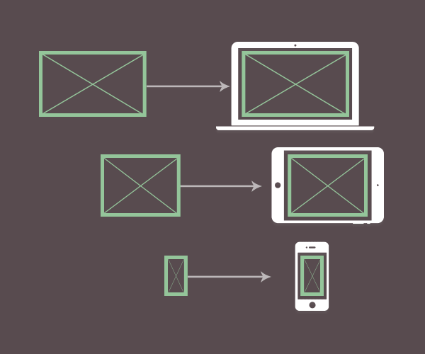

Респонсивний елемент <img> використовується браузером для завантаження тільки того зображення, яке підходить для цього пристрою із запропонованих розробником. Розробник вказує список доступних для завантаження зображень, а браузер, виходячи з розміру екрану пристрою і його піксельної щільності, вибирає найбільш вдалий.
Наприклад, розробник вказав два доступних зображення - 300×300 і 600×600 пікселів. Якщо браузеру достатньо зображення 300×300 - це чотириразова економія ваги зображення, яке завантажується. Що менший розмір екрана пристрою, то більше користі від такого підходу. Економія трафіку на мобільному пристрої може досягати 70-90%, порівняно з десктопом.
Визначає список версій однакового зображення різних розмірів. Не варто намагатися завантажити різні зображення (за контентом або форматом) за допомогою цієї техніки, браузер звертає увагу тільки на розмір і вважає, що все, що передають в srcset - це версії одного й того самого зображення.
<img srcset="" src="" alt="" />
Найпростіший спосіб використання респонсивного елемента <img> - це застосування дескриптора x, який буквально вказує браузеру, для якої щільності екрану підходить ця версія зображення.
<img
srcset="photo.jpg 1x, photo@2x.jpg 2x"
src="photo.jpg"
alt="Опис зображення для усіх версій"
/>
В атрибуті src вказується версія зображення стандартної якості, яка буде використана у разі, якщо браузер старий і не знає про srcset. В атрибуті srcset вказуємо 1x і 2x версії зображення, розділяючи оголошення комою. Якщо сторінка буде відкрита на пристрої з щільністю пікселів 2 або вище, замість стандартного, буде використане зображення photo@2x.jpg.
У прикладі для атрибута srcset вказані зображення стандартної і подвійної щільності, а також оригінальне зображення за замовчуванням в атрибуті src.
See the Pen lesson-16-srcset-x by goit-academy (@goit-academy) on CodePen.
Якщо відкрити інструменти розробника і перейти на вкладку Network, то буде видно, що завантажується тільки одне зображення, що підходить для щільності екрану, на якому відкрита веб-сторінка. Відкриваючи з Macbook Pro 15" 2017, щільність пікселів екрану якого дорівнює 2, браузер завантажить зображення, у якого вказаний дескриптор 2x.
Єдиний недолік такого підходу полягає в обмеженості критеріїв, за якими браузер вибирає зображення - тільки щільність пікселів екрану. Респонсивні зображення використовуються у респонсивній верстці, розміри блоків в якій змінюються, залежно від розміру в'юпорту.
Не завжди можливо задати точні розміри зображення на екрані, тому що під час збільшення в'юпорту необхідно буде показувати зображення 300x200 у блоці розмірами 600x400 пікселів або більше.
Ідеально, якби браузер вибирав зображення не тільки за щільністю пікселів, але ще враховував поточний розмір в'юпорту і розмір самого зображення на екрані. Для цього йому необхідно знати розмір оригінального зображення із запропонованого списку. Якраз це завдання і вирішує дескриптор w та атрибут sizes.
Ми, як і раніше, надаємо одне і те саме зображення у різних розмірах, але водночас даємо браузеру більше інформації, щоб він міг сам вибрати необхідне зображення, виходячи зі щільності пікселів, розміру в'юпорту та оригінального розміру зображення.
<img
srcset="photo-300.jpg 300w, photo-600.jpg 600w, photo-1200.jpg 1200w"
src="photo-300.jpg"
alt="Опис зображення для всіх версій"
/>
Позначаючи кожне зображення дескриптором w, в якому вказана ширина цього зображення в пікселях, ми перекладаємо всі обчислення і вибір зображення на браузер.
Корисно:
Якщо зображення photo-600.jpg розміром 600x400 пікселів, то помічаємо
його дескриптором 600w. В імені файлу зображення вказуємо його фізичну
ширину, щоб не забути, оскільки версій зображення може бути багато.
У разі використання дескриптора w, тобто прив'язки до фізичних розмірів зображення, необхідно використовувати атрибут sizes, щоб підказати браузеру приблизний розмір полотна, на якому в браузері буде малюватися зображення. Розміри можна вказувати як у пікселях, так і у відносних одиницях.
Наприклад, якщо зображення на екрані завжди буде 300px, достатньо вказати одне значення.
<img
srcset="photo-300.jpg 300w, photo-600.jpg 600w, photo-1200.jpg 1200w"
sizes="300px"
src="photo-300.jpg"
alt="Опис зображення для всіх версій"
/>
У разі, коли зображення повинно бути на 100% ширини в'юпорту на мобільних пристроях до 600px, 300px на екранах 601-900px і 600px на екранах ширше, значення sizes буде містити медіа-запити.
<img
srcset="photo-300.jpg 300w, photo-600.jpg 600w, photo-1200.jpg 1200w"
sizes="(min-width: 900px) 600px, (min-width: 600px) 300px, 100vw"
src="photo-300.jpg"
alt="Опис зображення для всіх версій"
/>
Увага:
Браузер читає медіа-вирази, зазначені в атрибуті sizes, зліва направо і
обирає перше підходяще, тому треба уважно стежити за порядком їх
оголошення.
Браузер вибирає зображення за дуже простим алгоритмом - множить розмір полотна (значення sizes) на щільність пікселів і вибирає найближче, підходяще за розміром зображення.
На ілюстрації показаний десктоп і смартфон з шириною зображення 100% ширини в'юпорту. Напишемо розмітку респонсивного елемента <img> для цього випадку.
<img
srcset="img-1200x714.png 1200w, img-3000x1768.png 3000w"
sizes="100vw"
src="img.png"
alt="Опис зображення для всіх версій"
/>
Браузер множить ширину в'юпорту на щільність пікселів.
У разі, коли в sizes задане фіксоване значення ширини зображення, браузер помножить його на щільність пікселів. Наприклад, sizes задане значення 400px.
<img
srcset="
photo-300.jpg 300w,
photo-600.jpg 600w,
photo-900.jpg 900w,
photo-1200.jpg 1200w
"
sizes="400px"
src="photo-300.jpg"
alt="Опис зображення для всіх версій"
/>
Тобто для мобільного пристрою буде взято більше зображення? Не завжди, браузер вибирає те зображення, яке найкраще підходить в цій ситуації.
Цікаво:
На відміну від розробника, який знає тільки розмір зображення і
приблизний розмір полотна, на якому воно буде відображатися, браузер
знає всі важливі технічні характеристики пристрою, на якому була
відкрита веб-сторінка. Крім того, браузер може враховувати інші фактори,
такі як швидкість інтернет-з'єднання і стан заряду батареї.